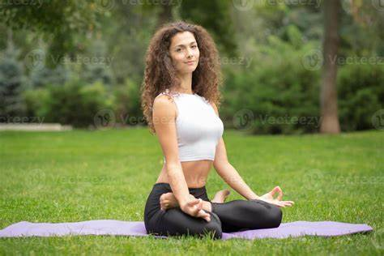
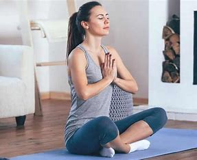

¿Quienes somos?
-

Manuela es profesora hace 5 años, esta formada en Yoga Vedanta, linea Sivananada. Luego
siguió su formación en Vinyasa Yoga, y por último formada también en Hashtamnga. A su ves es
Lic. En Psicología por lo que comparte terápias alternativas, fusionando estas dos
alternativas.
-

Sheila profesora hace 8 años, su primer formación fue como entrenadora personal, a lo que se
dedico los primeros años, luego conoció el pilates, diciplina en la cual se formo, y ahora
imparte sus clases. Luego se formó en Yoga integra, Hatha Yoga y Ashtanga Yoga.
Sobre este espacio